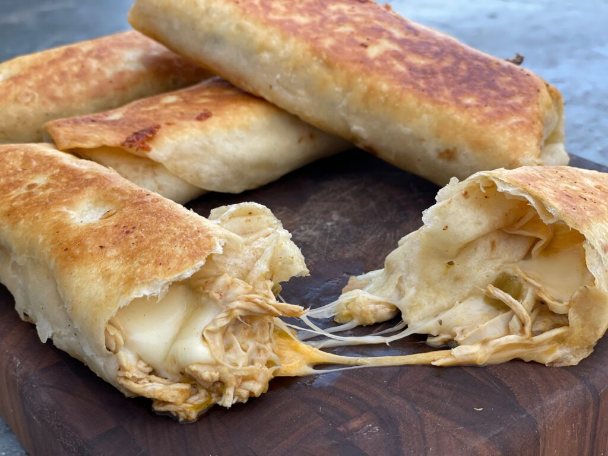

The Basic Chimichanga

Your basic chimi, can be quite simple to make and one of the great things about it is if you want to get fancy with it you still can.
Another great thing about it is you can switch sauces to change things up if you want something a little different.
Ingredients
- 2 quarts of oil, such as peanut or canola for frying
- 1/2 pound cooked chicken, shredded (can be pre-cooked)
- one 4 ounce can diced green chiles
- one 15 ounce can pinto beans, drained and rinsed
- 1/2 teaspoon chilipowder
- juice of half a lime
- salt and black pepper
- six 10-inch flour tortillas
- 1 cup shredded chaddar
- Sauce of choice
Special supplies
- toothpicks
Steps
- Preheat the oven to 250F. Setup fry station and begin heating oil to 365F
- In a large saute pan or microwave-safe bowl, combine the chicken, grean chiles,
beans, chilipowder, lime juice, and salt and peppet to taste. Warm Through.
- Assemble each chimi. Start with a layer of chicken mixture on each tortilla then add
a layer of shredded cheddar. Roll chimi, and secure seam with toothpicks. Fry chimis
one at a time in the oil, turning with tongs, until all sides are golden brown. Drain
on a wire rack or paper towels before transferring to a baking sheet. Keep warm in oven until serving.
- Serve with sauce of choice